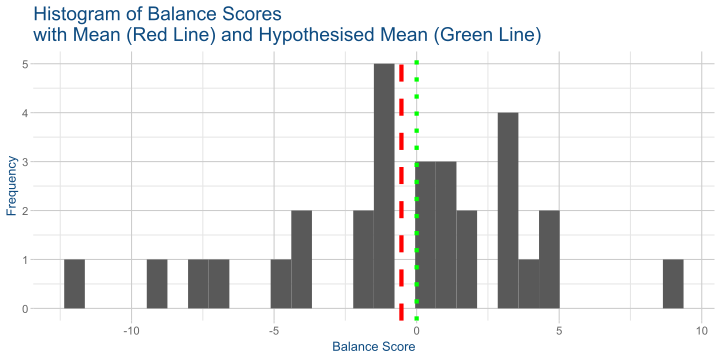
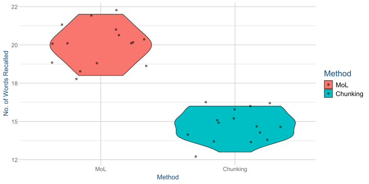
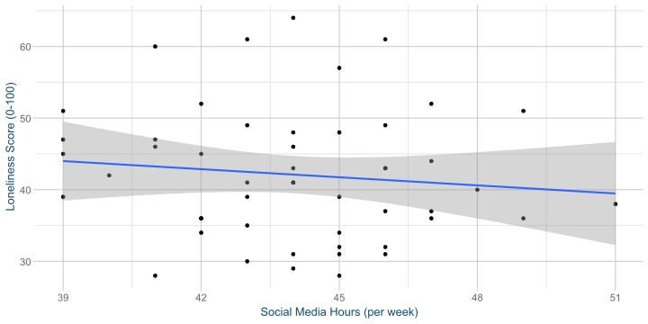

| Exploratory Data Analysis | W1 |
| W2 | |
| W3 | |
| W4 | |
| W5 | |
| Inference | W7 |
| W8 | |
| W9 | |
| W10 | |
| W11 |
Data Analysis for Psychology in R 1
Psychology, PPLS
University of Edinburgh
| Exploratory Data Analysis | W1 |
| W2 | |
| W3 | |
| W4 | |
| W5 | |
| Inference | W7 |
| W8 | |
| W9 | |
| W10 | |
| W11 |
| Basic Tests | W1 |
| W2 | |
| W3 | |
| W4 | |
| W5 | |
| Intro Linear Models | W6 |
| W7 | |
| W8 | |
| W9 | |
| W10 |
XXXXXXXXXXXX
XXXXXXXXXXXX
XXXXXXXXXXXX
XXXXXXXXXXXX
For the last few weeks, we’ve fitted variants of these models:
\[ y_i = \beta_0 + \epsilon_i \]
\[ y_i = \beta_0 + \beta_1 \cdot x_{i} + \epsilon_i \]
But how does this follow from what we learned about basic statistical tests?
\[ t = \frac{\bar x - \mu_0}{SE_{\bar x}} = \quad \frac{\text{sample mean} - \text{hypothesised mean value}}{\text{variation in sample mean due to random sampling}} \]
This is just an intercept only model
A cognitive psychologist is developing a new app-based game to test ‘balance’ in older adults. They measured how well participants could maintain a virtual object on a moving surface.
The game gives participants a score after each playing session. A score of 0 represented perfect balance, whilst scores above or below zero indicate deviations. Researchers wanted to test whether the average score of participants deviated from zero.
\[ \begin{matrix} H_0: \mu = \mu_0\\ H_1: \mu \neq \mu_0\\ \end{matrix} \]
\[ \begin{matrix} H_0: \beta_0 = 0\\ H_1: \beta_0 \neq 0\\ \end{matrix} \]
ggplot(data = app_dat, aes(x = balance)) +
geom_histogram() +
geom_vline(aes(xintercept = mean(balance)), color = "red", linetype = "dashed", size = 2) +
geom_vline(aes(xintercept = 0), color = "green", linetype = "dotted", size = 2) +
labs(title = "Histogram of Balance Scores \nwith Mean (Red Line) and Hypothesised Mean (Green Line)",
x = "Balance Score",
y = "Frequency")
One Sample T-Test
Intercept Only Linear Model
Call:
lm(formula = balance ~ 1, data = app_dat)
Residuals:
Min 1Q Median 3Q Max
-11.467 -1.467 0.533 3.283 9.533
Coefficients:
Estimate Std. Error t value Pr(>|t|)
(Intercept) -0.533 0.826 -0.65 0.52
Residual standard error: 4.5 on 29 degrees of freedom\[ t \quad = \quad \frac{(\bar{x}_1 - \bar{x}_2) - \delta_0}{SE_{(\bar{x}_1 - \bar{x}_2)}} \quad = \quad \frac{\text{difference between sample means} - \text{hypothesised difference in means}}{\text{variation in sample mean differences due to random sampling}} \]
This is just a simple linear model using dummy coding
Is recall success different depending on the memory technique used?
Comparing the effectiveness of two different memory techniques
Want to determine whether the method of loci or the chunking technique is more effective in helping individuals recall a list of 25 words
Data is collected from 30 participants, with 15 individuals randomly assigned to each memory technique
\[ \begin{matrix} H_0: \mu_1 = \mu_2\\ H_1: \mu_1 \neq \mu_2\\ \end{matrix} \]
\[ \begin{matrix} H_0: \beta_1 = 0\\ H_1: \beta_1 \neq 0\\ \end{matrix} \]

Independent Samples T-Test
tres2 <- t.test(Memory$Words_Recalled ~ Memory$Method,
mu = 0,
var.equal = TRUE,
conf.level = 0.95)
tres2
Two Sample t-test
data: Memory$Words_Recalled by Memory$Method
t = 13, df = 28, p-value = 3e-13
alternative hypothesis: true difference in means between group MoL and group Chunking is not equal to 0
95 percent confidence interval:
4.4 6.0
sample estimates:
mean in group MoL mean in group Chunking
20 15 Simple Linear Model
Call:
lm(formula = Words_Recalled ~ Method, data = Memory)
Residuals:
Min 1Q Median 3Q Max
-2.0 -0.8 0.0 1.0 2.0
Coefficients:
Estimate Std. Error t value Pr(>|t|)
(Intercept) 20.000 0.286 69.9 < 2e-16 ***
MethodChunking -5.200 0.405 -12.8 2.9e-13 ***
---
Signif. codes: 0 '***' 0.001 '**' 0.01 '*' 0.05 '.' 0.1 ' ' 1
Residual standard error: 1.1 on 28 degrees of freedom
Multiple R-squared: 0.855, Adjusted R-squared: 0.85
F-statistic: 165 on 1 and 28 DF, p-value: 2.93e-13\[ t \quad = \quad \frac{\overline{d} - \mu_{d_0}}{SE_\bar{d}} \quad = \quad \frac{\text{mean difference between pairs} - \text{hypothesised mean difference}}{\text{variation in sample mean differences due to random sampling}} \]
This is just an intercept only model where the difference is our dependent variable
Researchers want to assess the impact of a three-month community garden engagement programme on attitudes towards volunteerism.
They recruited 40 participants, who:
Attitude scores were measured on a scale of 1 to 100, with higher scores reflecting more positive attitudes towards volunteerism
Researchers calculated the difference between post- and pre-scores
\[ \begin{matrix} H_0: \mu_{d} = \mu_{d_0}\\ H_1: \mu_{d} \neq \mu_{d_0}\\ \end{matrix} \]
\[ \begin{matrix} H_0: \beta_0 = 0\\ H_1: \beta_0 \neq 0\\ \end{matrix} \]
Paired Samples T-Test
Intercept Only Model
Call:
lm(formula = dif ~ 1, data = volunteer)
Residuals:
Min 1Q Median 3Q Max
-13.99 -2.24 1.01 4.01 9.01
Coefficients:
Estimate Std. Error t value Pr(>|t|)
(Intercept) 24.990 0.535 46.8 <2e-16 ***
---
Signif. codes: 0 '***' 0.001 '**' 0.01 '*' 0.05 '.' 0.1 ' ' 1
Residual standard error: 5.3 on 99 degrees of freedom\[ r=\frac{\frac{\sum_{i=1}^n(x_i-\bar{x})(y_i-\bar{y})}{n-1}}{\sqrt{\frac{\sum_{i=1}^n(x_i-\bar{x})^2}{n-1}}\sqrt{\frac{\sum_{i=1}^n(y_i-\bar{y})^2}{n-1}}} = \frac{Cov_{xy}}{s_xs_y} \]
\[ t=r\sqrt{\frac{n-2}{1-r^2}} \]
Researchers want to assess the influence of social media usage on feelings of loneliness in young people.
They recruited 50 participants, who:
social_hrs)loneliness; higher scores indicated greater feelings of loneliness)\[ \begin{matrix} H_0: r = 0 \\ H_1: r \neq 0 \\ \end{matrix} \]
\[ \begin{matrix} H_0: \beta_1 = 0\\ H_1: \beta_1 \neq 0\\ \end{matrix} \]
# A tibble: 50 × 5
PID loneliness social_hrs social_hrs_z loneliness_z
<chr> <dbl> <dbl> <dbl> <dbl>
1 ID1 61 43 -0.382 2.07
2 ID2 29 44 -0.0147 -1.44
3 ID3 34 45 0.352 -0.887
4 ID4 36 49 1.82 -0.668
5 ID5 31 46 0.719 -1.22
6 ID6 31 45 0.352 -1.22
7 ID7 47 39 -1.85 0.537
8 ID8 39 45 0.352 -0.340
9 ID9 41 44 -0.0147 -0.121
10 ID10 60 41 -1.12 1.96
# ℹ 40 more rows
Correlation
Standardised Simple Linear Model
Call:
lm(formula = loneliness_z ~ social_hrs_z, data = lonely)
Residuals:
Min 1Q Median 3Q Max
-1.670 -0.752 -0.122 0.590 2.398
Coefficients:
Estimate Std. Error t value Pr(>|t|)
(Intercept) -2.39e-17 1.42e-01 0.00 1.00
social_hrs_z -1.13e-01 1.43e-01 -0.78 0.44
Residual standard error: 1 on 48 degrees of freedom
Multiple R-squared: 0.0127, Adjusted R-squared: -0.0079
F-statistic: 0.616 on 1 and 48 DF, p-value: 0.436Since our linear model had a single continuous predictor, the standardised slope \((\hat \beta_1^*)\) is exactly the same as the correlation coefficient \((r)\) between the predictor and the outcome!
Why?
XXXXXXXXXX
XXXXXXXXXX
XXXXXXXXXX
XXXXXXXXXX